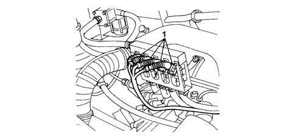
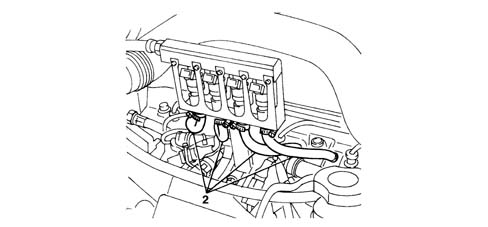
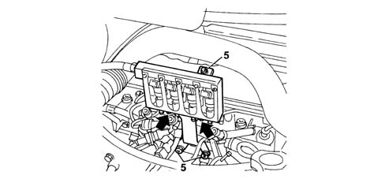
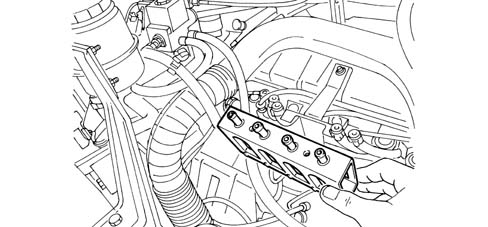

1058B Methane injector leakage test
- Path
- Test > 10 ENGINE > 1058 CNG FUEL SYSTEM > 1058B Methane injector leakage test
- Kind
- test / check procedure
- Applies to
- all engines; all production periods; only with equipment: BIPOWER
- Interactive page
- https://sloeber94.github.io/elrnDB-fDbl/en/#/2585346
Applies to: all engines; all production periods; only with equipment: BIPOWER
The safety instructions described in the manual must be followed when working on the methane system components. Keep devices at high temperatures or those which could cause electrical sparks away.
Let the engine run for a few minutes on methane.
Turn the ignition key to the OFF position.
Disconnect the battery negative terminal.
Disconnect the connectors (1) from the methane injectors.

Applies to: all engines; all production periods; only with equipment: BIPOWER
Remove the methane pipe (2) retaining bands from the injectors.

Applies to: all engines; all production periods; only with equipment: BIPOWER
Remove the methane distribution manifold keeping the low pressure pipe and the injectors connected.

Applies to: all engines; all production periods; only with equipment: BIPOWER
Introduce a small amount of oil into the injector spray duct.

Applies to: all engines; all production periods; only with equipment: BIPOWER
Check that there are no gas leaks shown by a series of oil bubbles.